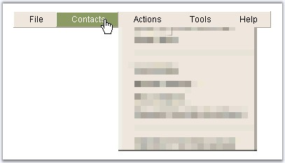

Transition effect and slide effects can be applied for the expand and collapse actions for the parent menu items.
Transition effects can be set with one of the values which will be applied during the expand and collapse actions of the items. The values supported are shown below.
|
Property |
Description |
|
CollapseTransition |
The visual effect to use for collapse animation. Default value is None. The options included are as follows: · None · Fade · Dissolve · Pixelate · WipeDown · WipeLeft · WipeRight · WipeUp |
|
ExpandTransition |
Specifies the visual effects to use for the expand animation. Default value is None. The options included are as follows: · None · Fade · Dissolve · Pixelate · WipeDown · WipeLeft · WipeRight · WipeUp |
Figure 231: WipeRight effect applied for the Menu item expand

Figure 232: Pixelate effect applied for the Menu item collapse
The html view of the transition effects and properties that are set for the expand / collapse actions of Menu.
|
<cc1:Menu ID = "Menu1" runat = "server" AutoFormat = "Office2000_Olive" CollapseTransition = "Pixelate" CollapseDuration = "5000" CollapseType = "Constant" CollapseDelay = "300" ExpandTransition = "WipeRight" ExpandDuration = "7000" ExpandType = "Constant" ExpandDelay = "200"> |
The rate at which the expand and collapse transition can be set using the ExpandTypes and CollapseType properties.
|
Property |
Description |
|
CollapseType |
Specifies the type of slide effect to use for collapse animation. Default value is None. The options included are as follows: · None · Constant · Accelerate · Decelerate |
|
ExpandType |
Specifies the type of slide effect to use for the expand animation. Default value is None. The options included are as follows: · None · Constant · Accelerate · Decelerate |
The duration of the expand and collapse transition can be specified through ExpandDuration / CollapseDuration properties. Also, on clicking a parent item, the initial time after which the expand / collapse action should begin can be specified through ExpandDelay / CollapseDelay properties.
|
Property |
Description |
|
CollapseDelay |
Specifies delay in milliseconds. The time when mouse leaves the menu and the menu starts to collapse. |
|
CollapseDuration |
The duration of the collapse animation, in milliseconds. |
|
ExpandDelay |
Specifies the delay, in milliseconds. The time when the mouse points a menu item and its subgroup begins to expand. |
|
ExpandDuration |
Specifies the duration of expand animation, in milliseconds. |